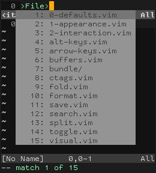
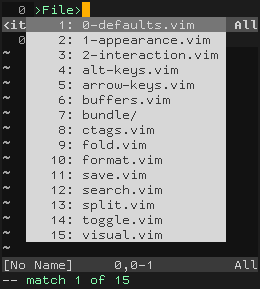

xoria256 menu color patch
Vim’s menus are difficult to read under the xoria256 color scheme:

So I patched them (using colors from the same palette) as follows:
colorscheme xoria256
highlight Pmenu ctermbg=188 guibg=#d0d0d0
highlight PmenuSel ctermfg=188 guifg=#d0d0d0
This results in higher contrast menus that are easier to read:

I sent this patch to Dmitriy Y. Zotikov, the author of xoria256, in hopes that he will incorporate it into the official version of the color scheme.